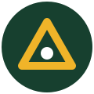

Lo último en la tienda
Ejemplos de publicaciones para mostrar cómo funciona el intercambio, la venta y la donación dentro de la plataforma.
Ver toda la tienda Conocer a la comunidad
Lo que nuestra comunidad ha logrado
Un resumen visual de donaciones, ventas solidarias y reciclaje.
* Cifras ilustrativas para la presentación. Se actualizarán con datos reales cuando la comunidad use la plataforma.
Nuestro propósito
Pequeñas acciones, impacto compartido
♻ Menos residuos
Alargar la vida útil de los objetos antes de desecharlos.
🤝 Más colaboración
Facilitar que lo que una persona ya no necesita ayude a otra.
🌱 Consumo consciente
Promover hábitos responsables y educación ambiental.
Eco-Trueque en acción
Descubre cómo reutilizar, intercambiar y reciclar ayuda a cuidar nuestro planeta.
📹 Espacio para el video de tu proyecto. Puedes reemplazar el archivo video/eco-trueque.mp4 por tu video, o insertar un enlace de YouTube.
La Ruta de las 4 R (Aprende y Gana Sellos)
Haz clic en cada estación para completar los minijuegos y desafíos en el laboratorio interactivo:
🛡️ Rechazar
Decir no a lo innecesario en el simulador de compras.
Estación 2📉 Reducir
Calcula tu huella anual y genera tu reto semanal.
Estación 3🔄 Reutilizar
Taller de upcycling y trueque entre compañeros.
Estación 4
♻️ Reciclar
Minijuego del clasificador veloz y cálculo de equivalencias.